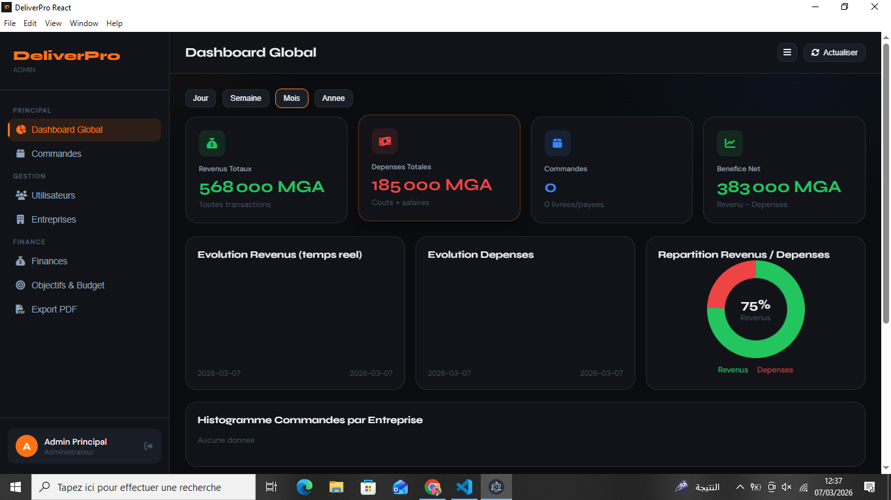
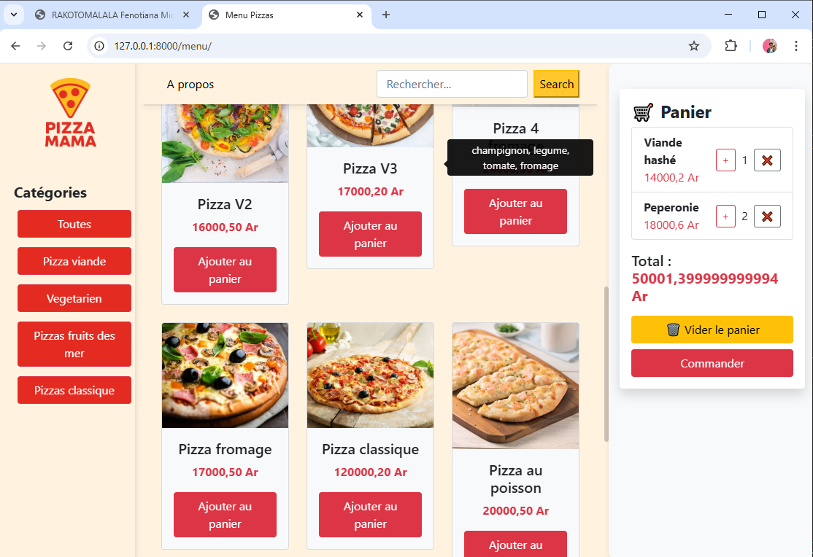

Portfolio
Etudes de cas
J'organise ici mes projets les plus documentes sous forme d'etudes de cas visuelles. Chaque page detaille le contexte, les choix realises, les captures et la valeur livree.

Etude de cas 01
DeliverPro, application desktop de gestion de livraison
Un back-office desktop concu pour suivre les commandes, les utilisateurs, les entreprises et les finances depuis une seule interface de travail.
Defi : Eviter de gerer l'activite entre plusieurs fichiers, vues et outils disperses.
Solution : Une application React + Electron avec authentification admin, dashboard global et modules de gestion relies a l'API.
Resultat : Un poste de pilotage unique pour suivre l'operationnel, les revenus, les depenses et la performance des partenaires.
React, Vite, Electron, API REST, JWT

Etude de cas 02
Site de commande pour restaurant
Un site web concu pour rendre un restaurant plus visible, presenter son menu et recevoir des commandes dans une interface simple a administrer.
Defi : Mettre en ligne le menu et permettre au client de gerer son contenu sans aide technique.
Solution : Un front clair pour les visiteurs et une administration sur mesure sous Django.
Resultat : Le restaurant peut mettre a jour ses categories, ses produits et suivre les commandes.
HTML, CSS, Django, Python

Etude de cas 03
Application de gestion des revenus et depenses
Une application de suivi budgetaire qui centralise les transactions, automatise le calcul du solde et rend l'analyse financiere plus lisible.
Defi : Rendre le suivi financier simple, clair et exploitable au quotidien.
Solution : Une interface Streamlit reliee a une API et a des graphiques pour mieux lire les donnees.
Resultat : Les revenus, depenses et tendances sont visibles dans un seul espace.
Streamlit, Plotly, FastAPI, Python